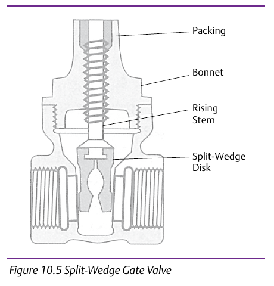

Double Disk vs. Split Wedge: Wear Behavior


The double disk gate valve is explicitly contrasted against the split-wedge design in the source on friction/wear behavior — closure by two independent, parallel disks rather than a single wedge shape changes how the seating faces wear over repeated cycles. (Content credited to IPT's Pipe Trades Handbook by Robert A. Lee.) Component Index: cvh-cmp-double-disk-gate-valve, cvh-cmp-split-wedge-gate-valve.